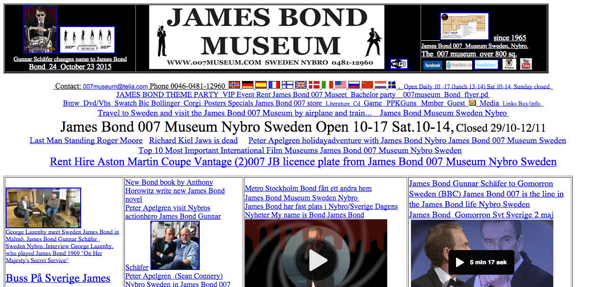
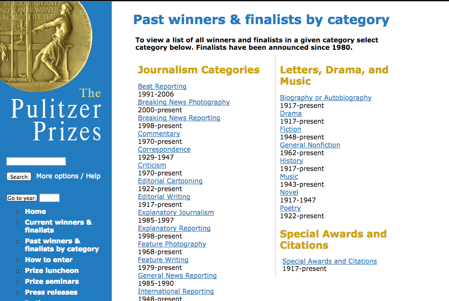
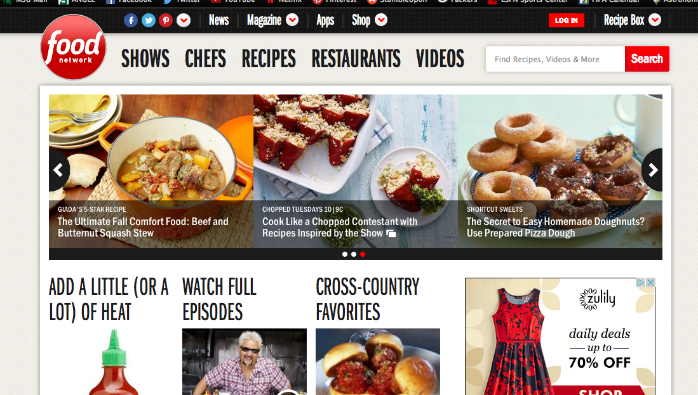

Signal to Noise Ratio Example 1 Link
I chose this website as a bad example for Signal to Noise Ratio because there are two ads that jump out at you when you first look at the webpage. The paragraph of small text looks like it could be an ad as well. You also have to scroll down past the ad to get to the meaningful content.
Signal to Noise Ratio Example 2 Link
I chose Pintrest as a good example for Signal to Noise Ratio because there are no ads on the page. All of the information is relevant because it is based on the people you follow.
Chunking Example 1 Link
I chose this website as a good example for Chunking because all the information is "chunked" together with different colored backgrounds. This makes the site easier to read and get information and also simplifies the layout.
Chunking Example 2 Link
I chose this website as my bad example for Chunking because the site is not organized well. This website could have been "chunked" into broader topics that are clickable, which lead you to more detailed options to click on.
Ockham's Razor Example 1 Link
I chose this website as a good example of Ockham's Razor because, even though this site is very boring, the design is very simple. There are two buttons with obvious functions: one to go "home" (to learn more facts about different topics and people) and one to start reading "10 cool facts about Bill Gates."
Ockham's Razor Example 2 Link
I chose this website as a bad example of Ockham's Razor because this is not a simple design whatsoever. It is not organized and there are way to many, scattered links.
Rule of Thirds Example 1 Link
I came across this website when I was trying to find some bad examples for this weeks exercise. Even though this website is boring to look at, it is a good examle of the Rule of Thirds design.
Rule of Thirds Example 2 Link
I chose this website as a bad example of the Rule of Thirds design because even thought this website is divided into three columns, it is unpleasing to the eye. The long lists of small texts and links make this website a bad example because there are no "points of interest."
Hick's Law Example 1 Link
I chose this online shop as a good example of Hick's Law because there are only 4 different links/tabs that the user can click on, which makes the decision options limited but useful.
Hick's Law Example 2 Link
I chose the Food Network as a bad example of Hick's Law because there are a lot of options to choose from. Between the links at the top, the 3 images with stories that keep scrolling to new stories, and the stories below those leads to many different decision outcomes.